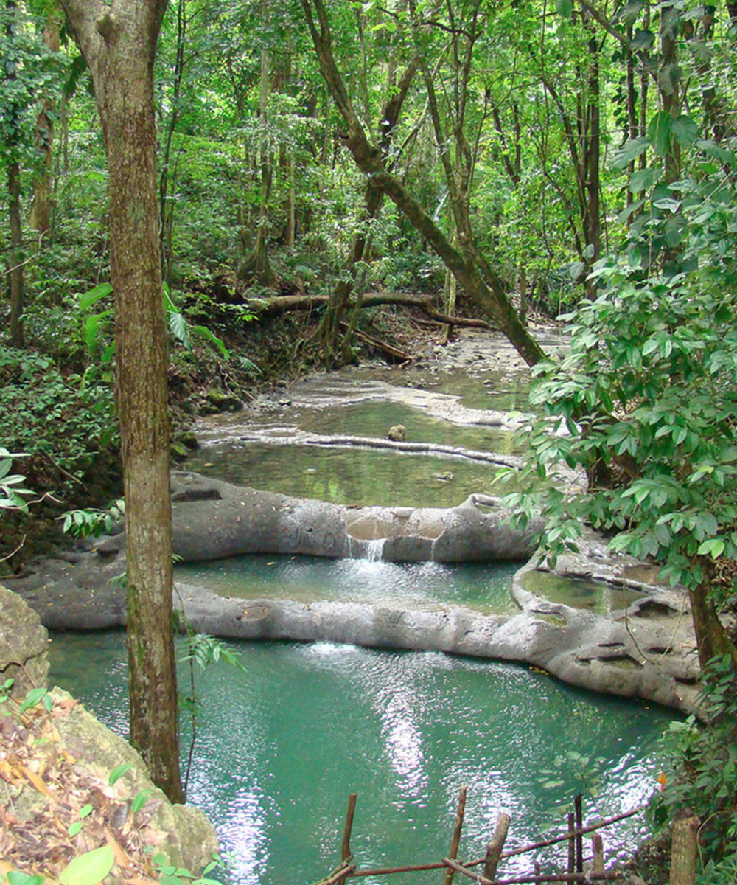
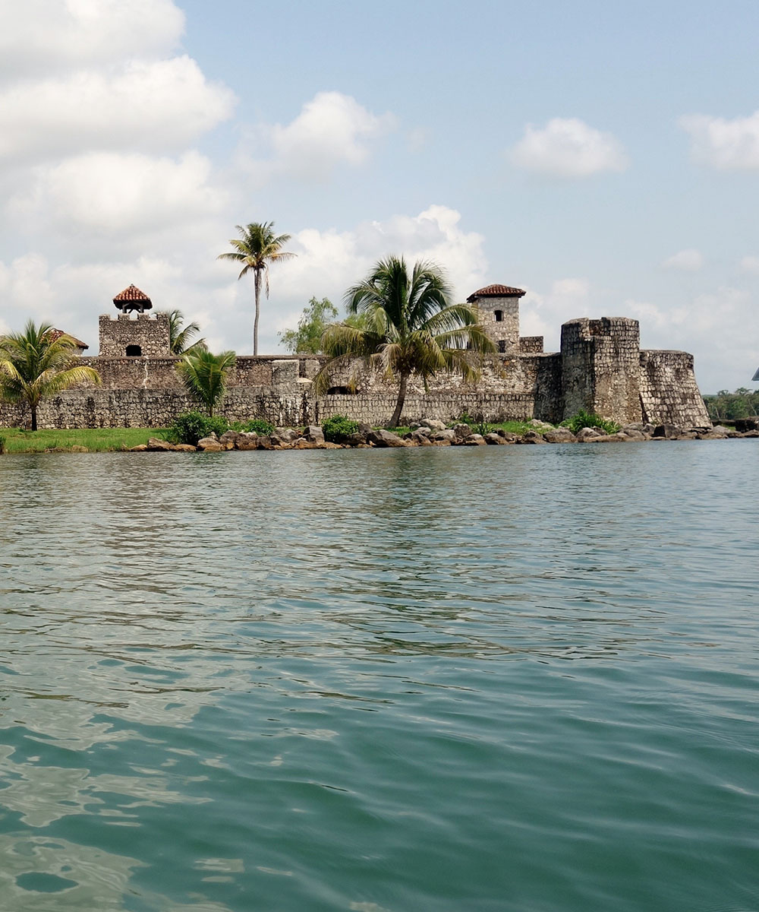
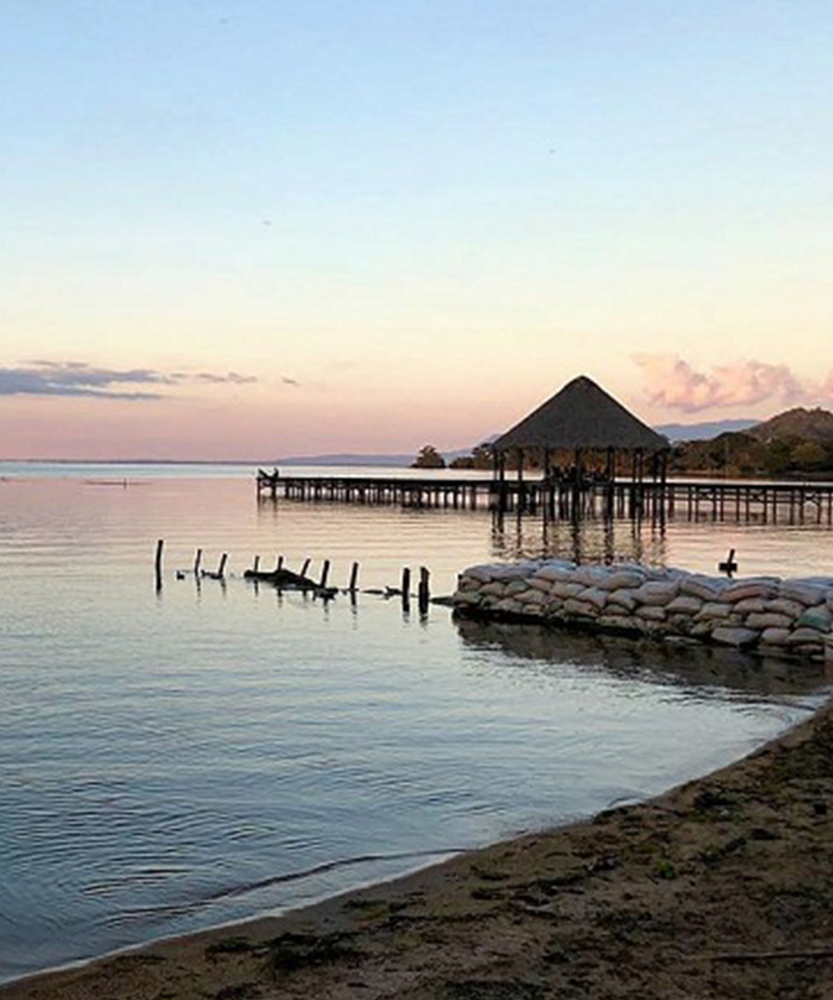

Aparte de tu estadilla en nuestro hotel con las instalaciones y servicio perfecta para una
vacación inolvidable, en Catamaran Island te ofrecemos una excelente ubicación para poder
conocer los preciosos lugares a nuestri alrededor. Con nuestros encargados de recepción puedes
organizar excurciones y coordinar transporte.

It is a white sand beach located in the Guatemalan Caribbean Sea. It is one of
the best beaches you can find in Guatemala, surrounded by nature,
palm trees and crystal clear waters.
You can camp and you will not find any kind of building. It is a small paradise to enjoy the sun, water or just relax under a palm tree.
You can camp and you will not find any kind of building. It is a small paradise to enjoy the sun, water or just relax under a palm tree.

Its name, Siete Altares, comes from seven pools of clean and calm waters
that make up this place. There are more pools, but seven are distinguished by their size
And beauty. It is a protected area that has a great variety of wealth
natural characteristic of the region.
You can see crabs, butterflies, fish and exotic wildlife in their natural habitat. Hunting is totally prohibited. To arrive, just take a boat from Livingston and in a few minutes to get to this paradisiacal place.
You can see crabs, butterflies, fish and exotic wildlife in their natural habitat. Hunting is totally prohibited. To arrive, just take a boat from Livingston and in a few minutes to get to this paradisiacal place.

It is a Guatemalan municipality of the department of Izabal, located at 15
kilometers by boat from Puerto Barrios. Livingston is mainly populated
by inhabitants of the Garífuna ethnic group, who were in the middle of the century
XVIII, and is one of the main tourist attractions of the country. its
gastronomy is unique and its main dishes are the "Rice and Beans", the
tapado and the famous coconut bread.
It combines Caribbean beaches with crystal clear waters, palm trees, exuberant vegetation, white sand, jungle, the splendid Rio Dulce canyon and a rich fauna in the which abound a great variety of marine birds and other tropical birds.
It combines Caribbean beaches with crystal clear waters, palm trees, exuberant vegetation, white sand, jungle, the splendid Rio Dulce canyon and a rich fauna in the which abound a great variety of marine birds and other tropical birds.

Finca Paraíso is located on the shores of Lake Izabal, in the
municipality of El Estor, whose main attraction is a large waterfall
hot, which is one of those phenomena that seldom
nature gives us, because even in the morning, you can
Observe the steaming water vapor that bounces.
In contrast, at the foot of the waterfall, are the cold waters of the River San Antonio, whose mixture of This makes the farm a unique place.
In contrast, at the foot of the waterfall, are the cold waters of the River San Antonio, whose mixture of This makes the farm a unique place.

It is a fortress located at the mouth of the Rio Dulce and Lake Izabal in
the east of Guatemala.
It was built in the 17th century to protect the Colonial properties against pirate attacks.
The castle of San Felipe was exposed to repeated pirate attacks until the 18th century, defending a high maritime traffic.
It was also used for a long time as prison. Now it happened to be one of the most visited tourist attractions in Sweet River.
It was built in the 17th century to protect the Colonial properties against pirate attacks.
The castle of San Felipe was exposed to repeated pirate attacks until the 18th century, defending a high maritime traffic.
It was also used for a long time as prison. Now it happened to be one of the most visited tourist attractions in Sweet River.

Lake Izabal is the largest lake in Guatemala. Its waters, exposed to
very strong storms, they have an abundance of fish, and their shores are
populated by large numbers of herons, variety of waterfowl and many
mammals The sunsets are amazing.